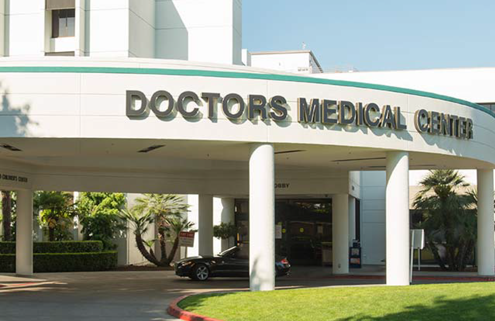
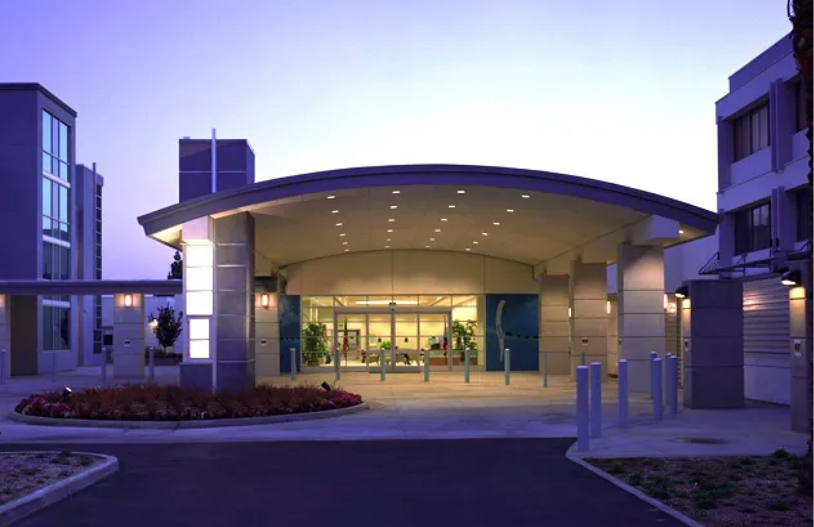
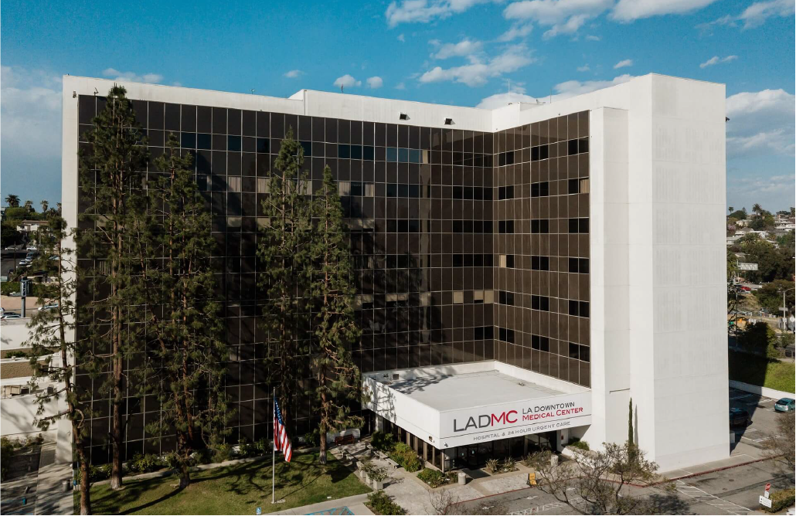
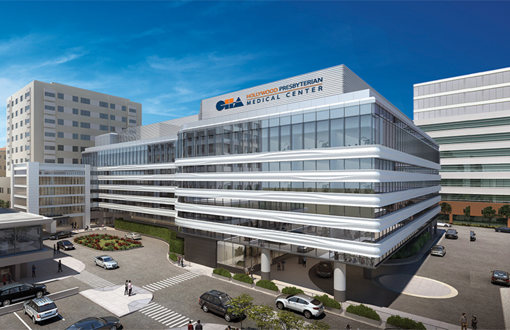
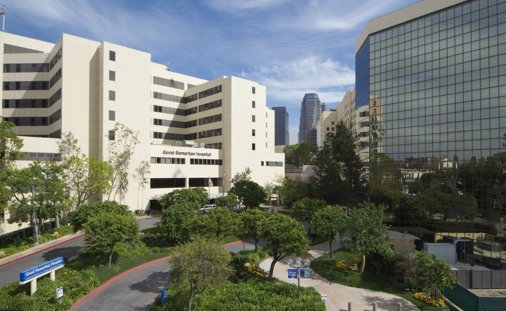
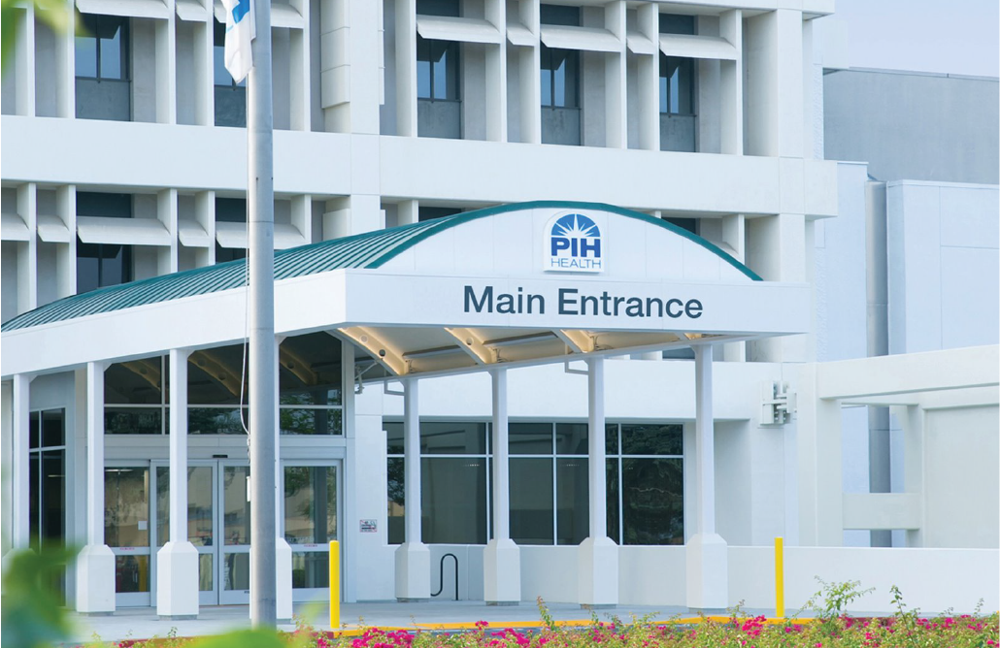
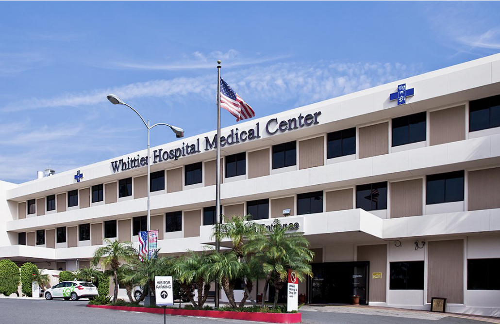

Genesis Medicus
California Clinical Campuses Over 2,640 Beds
‹ Sponsors and Affiliate Sites ›

Doctors Medical Center
DMC is a Verified Level II Teaching Hospital serving as the Hub for the Central Valley Region along
withDoctors Hospital of Manteca and Emanuel Medical Center in Turlock.Together these three sites offer over
874 staffed beds dedicated to training and educating future physicians. With over 600 Physicians on staff,
100,000 ED visits annually, and more then 22,00 patient admissions a year, DMC represents the largest hospital
between Stockton and Fresno.
Doctors Medical Center of Modesto is a full-service, comprehensive healthcare facility, dedicated to providing
the finest medical care for the Stanislaus County community. From preventative and diagnostic services to
expertise in some of the world's leading technologies, DMC's multidisciplinary team of physicians and
healthcare professionals are dedicated to your good health and well-being.
Creating a highly trained workforce, Doctors Medical Center of Modesto is committed to providing you with the
medical education and training health professionals require to grow in their field.
As a resident, you will apply what you've learned and hone your skills in our state-of-the-art hospital. You
will develop excellent clinical skills, receive practice experience and further your academic studies under
the supervision of our experienced attending physicians.

Mission Community Hospital
MCH is a 145 Acute care facility with countless services and departments committed to Medical Education. Owned
and operated by Deanco Healthcare, LLC, Mission Community Hospital has been providing high-quality healthcare
in the San Fernando Valley community for more than 50 years. Mission Community provides a full range of
medical, surgical and mental health care, including 24-hour emergency services.
Mission Community is licensed for 75 medical/surgical beds, 10 critical care beds plus an additional 60 beds
for psychiatric care. Fully accredited by The Joint Commission, our hospital is licensed to participate in the
Medicare and Medi-Cal programs. Additionally, Mission Community is a designated California Disproportionate
Share Hospital, and majority of our services are provided to Medicare and Medi-Cal beneficiaries.
MCH is an ACGME approved Sponsor Institution for both Family Medicine and Psychiatry Programs.
MCH is committed to cultivating a culture of quality service where our residents learn practical patient care
skills while working closely with our faculty members and support staff. Our experienced physicians are highly
regarded professionals within the medical community and will provide exceptional guidance throughout your
residency experience.
An important part of our program includes a nurturing environment where you will be able to explore what
motivates you, surround yourself with people who will inspire you, and discover which areas of the medical
profession are most personally and professionally satisfying to you. Our continual efforts to provide a
balance between personal renewal and professional growth makes our Family Medicine and Psychiatry residency
program a dynamic place to learn and grow.

Los Angeles Downtown Medical Center
LAMDC hosts 269 inpatient hospital beds provide care for a culturally diverse population at two campuses in
Los Angeles County.
The Downtown Campus is a welcoming community hospital committed to training Physician and Nurses. Located at
the intersection of three of Los Angeles’ oldest neighborhoods – Historic Filipino Town, Echo Park, and Silver
Lake. The Hospital was recently approved as a Sponsor Institution and we anticipate starting our Psychiatry
Residency Program in Summer of 2023.
The Ingleside Campus was established in 1918 in the San Gabriel Valley. It is one of the first licensed
psychiatric facilities in California. This campus provides an optimal setting for treatment and opportunities
for therapeutic outdoor activities. Our dedicated team is committed to providing safe, compassionate, and
supportive care to our patient.

Hollywood Presbyterian Medical Center
CHA Hollywood Presbyterian Medical Center has been caring for the Hollywood community and surrounding areas
since 1924. The hospital is committed to serving our local multicultural communities with quality medical and
nursing care. With more than 500 physicians representing virtually every specialty, CHA Hollywood Presbyterian
Medical Center is ready to serve the medical needs of you and your loved ones. We strive to distinguish
ourselves as a leading healthcare provider, recognized for providing quality, innovative care in a
compassionate manner.
A leader in bio-medical research, CHA Bio Group is at the forefront of research on cell, gene, and epigenetic
development through resource acquisition for future medical use in treatment of incurable diseases, while
fostering the next generation of medical professionals. The group has developed an international reputation
for its world-class health treatments and advances in reproductive medicine. What differentiates us as a
global leader is our strong ecosystem based on the collaboration of university, research institute, hospital
network, and bio companies which enables us to accelerate research and development and successfully realize
new business opportunities.
This massive teaching site offers virtually service required of any person Newborn, Child, Yond Adult, Adult
and Elderly. HPMC is a full-service medical center

PIH-Good Samaritan Medical Center
PIH Health is the Communities’ Health and Wellness Partner. Our network of highly trained and compassionate
physicians, nurses, clinicians, staff and volunteers work tirelessly and collaboratively every day to maintain
and enhance the health and wellbeing of every member of our service areas. We are here to coordinate care,
manage chronic disease, and treat health conditions for the best possible outcomes. We’re a nonprofit,
regional healthcare network with three hospitals, numerous outpatient medical offices, a multispecialty
medical (physician) group, home healthcare services and hospice care, as well as heart, cancer, digestive
health, orthopedics, women’s health, urgent care and emergency services. Our leadership is dedicated to
putting patients first—a cornerstone of our mission, vision and values—as we deliver top-quality healthcare.
We serve more than 3.7 million residents in the Los Angeles County, Orange County and San Gabriel Valley
region. Explore our history and review our current activities through our online newsroom.
PIH Health has two distinct residency programs at separate locations. The program in Whittier is an ACGME
accredited Allopathic Family Medicine Residency that also offers advanced training tracks in Continuum Care
and Tropical Medicine. The program in Downey is an AOA accredited Osteopathic Family Medicine Residency that
provides a well-balanced medicine curriculum.

PIH-Downey Hospital
PIH Health Downey Hospital is a non-profit, community hospital serving Downey and its surrounding cities with
199 beds. The emergency room is very busy with approximately 56,000 patients per year. Our hospital services
include:
- Intensive Care Unit
- Cardiac Critical Care Unit
- Labor & Delivery
- Telemetry
- Inpatient and outpatient operating rooms
- Medical-Surgical
- Cardiac Cath Lab
- GI Lab
- Radiology Department
- Interventional Radiology
- Pathology
- Lab
- Emergency Department
The residency program at PIH Health Downey Hospital originally began in 1993 as part of Rio Hondo Hospital
which then moved to Downey Community Hospital and later became Downey Regional Medical Center. In 2013, PIH
Health acquired Downey Regional Medical Center and renamed it PIH Health Downey Hospital. Our program is an
AOA/ACGME accredited Osteopathic Family Medicine Residency with a strong emphasis on teaching.

PIH – Whittier Medical Center
The PIH Health Family Medicine Residency Program is an unopposed program that serves the communities of Los
Angeles & Orange counties as well as the San Gabriel Valley. Our mission is to provide students and residents
with a rich, broad-based, and multidisciplinary graduate medical education that is built on a culturally
competent foundation. Our residents provide medical care to underserved socio-economic populations and
multi-cultural communities where they establish their roles as community health providers. By presenting our
residents with these targeted and fundamental learning experiences throughout their training, we aim to guide
and inspire them to continue to provide the same type of outreach and medical services in similar communities
upon graduation
Our program offers an exemplary model of working as a member of a collaborative healthcare team that includes
hospital and ambulatory specialists, physician assistants, nurse practitioners, social workers, behavioral
scientists, and community partners. Our learners work directly with attending physicians in numerous
specialties, allowing for exceptional and personalized training opportunities.
Medical students are expected to have basic medical knowledge consistent with their experience and level of
training. They should be capable of self-directed learning as they improve their clinical skills and medical
knowledge. Students are expected to function as part of a healthcare team and always use their judgment in
seeking guidance and conducting themselves in a manner befitting their chosen profession.